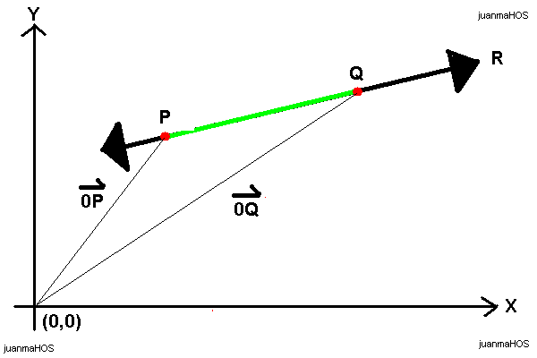
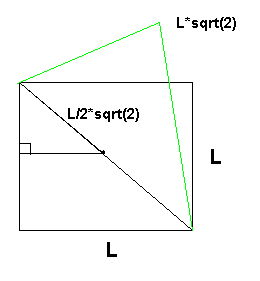
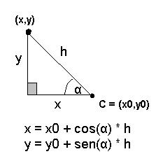
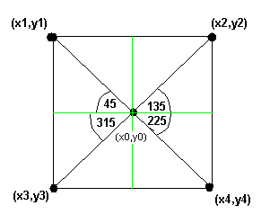

Funny Stuff
How to draw a line
Using linear algebra we can calculate the equation of the R line as follow:
0P = 0Q + t * v
where:
P is any point of the line R
Q is the reference point that defines R
t * v is the direction vector
Now, we can compute the R equation given two points: (x1,y1) y (x2,y2) as above:
0Q + t * 0P = (x1,y1) + t ( (x2,y2) - (x1,y1) ) = ( x1 + t (x2-x1), y1 + t (y2-y1) )
Then:
x = x1 + t (x2-x1)
y = y1 + t (y2-y1)
Bingo!, neither X nor Y are restricted by a zero division as happened in y=mx+b.

How to rotate a square
The goal of the algorithm is to draw a square rotated by a theta angle. The point (x0,y0) is the center of the square.
All polygons of side "L" have a radio, in the case of a square, it sizes L/2*sqrt(2).

Figure 1.
Using Pitagoras we have that the diagonal D is:
D2 = L2 + L2, then
D = sqrt( 2* L2 ), then
D = L * sqrt(2), because D is a side D>0
And the radio is the half of D, then radio = L/2 * sqrt(2).
Now, we know that anyone can draw a point (x,y) using polar coordinates, just what we need is a point C, an angle and a radio (hypotenuse h).

Figure 2.
We can draw a square using four points, four points corresponding to the four radios of the shape, L * sqrt(2):
line1 = (x1,y1) to (x2,y2)
line2 = (x2,y2) to (x4,y4)
line3 = (x4,y4) to (x3,y3)
line4 = (x3,y3) to (x1,y1)

Figure 3.
We can use the polar coordinates to find the points of the square where (x0,y0) is the center and L/2 * sqrt(2) is the size of the hypotenuse. To rotate the square theta grades just add theta grades to alpha. The equation is above:
x = x0 + cos(alfa+theta) * L* sqrt(2)
y = y0 + sen(alfa+theta) * L * sqrt(2)
where alfa: 45,135,225 and 315
It is the algorithm, special thanks to the Linear Algebra.